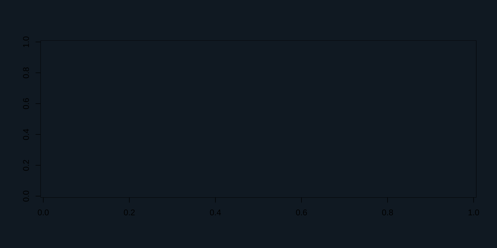
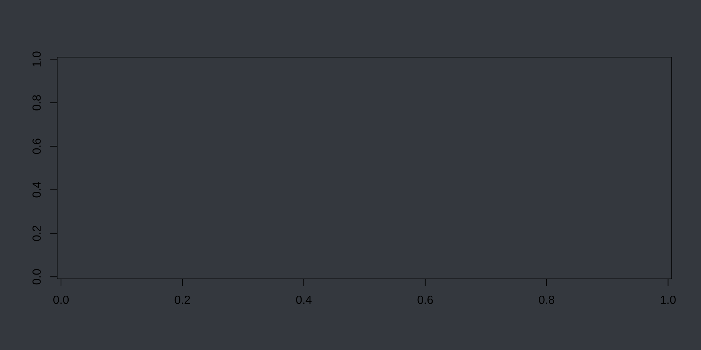
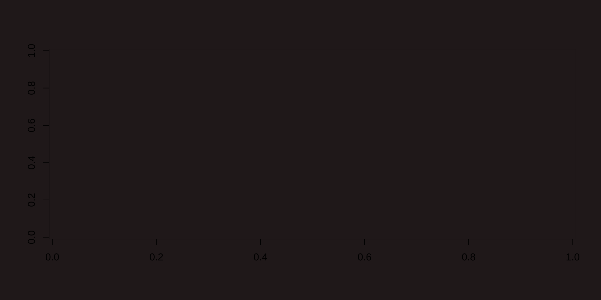
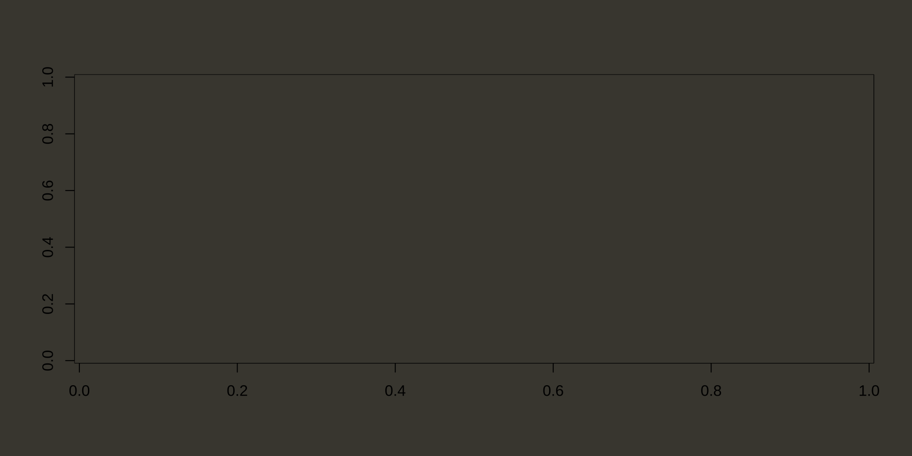
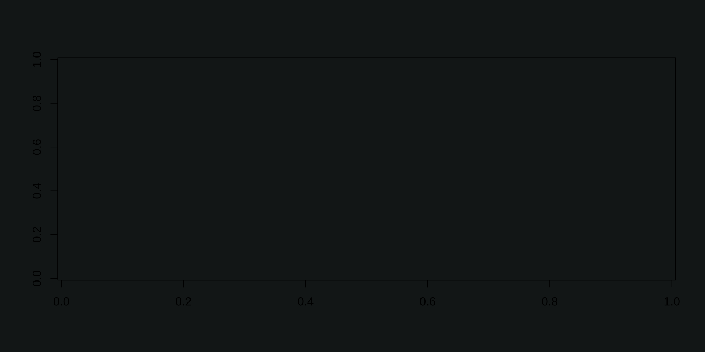

Below are a few themes from https://themer.dev/
TODO: * Show the ports instead (or maybe others)? * Support the light variant? * Tab callback to change the page’s styling? * Integrate with rest of site (ditch pkgdown?)
thematic_on( bg = "#13222E", fg = "#ACBECC", accent = "#9770B2", font = font_spec("Fira Sans Condensed", scale = 1.2) )
image(volcano, col = thematic_get_option("sequential")) #> Error : RStudio not running #> Warning in image.default(volcano, col = thematic_get_option("sequential")): #> supplied color is neither numeric nor character

thematic_on( bg = "#44484F", fg = "#C7F3FF", accent = "#94CEF2", font = font_spec("Fira Sans Condensed", scale = 1.2) )
image(volcano, col = thematic_get_option("sequential")) #> Error : RStudio not running #> Warning in image.default(volcano, col = thematic_get_option("sequential")): #> supplied color is neither numeric nor character

thematic_on( bg = "#2A2021", fg = "#EDEBEE", accent = "#6484B5", font = font_spec("Fira Sans Condensed", scale = 1.2) )
image(volcano, col = thematic_get_option("sequential")) #> Error : RStudio not running #> Warning in image.default(volcano, col = thematic_get_option("sequential")): #> supplied color is neither numeric nor character

thematic_on( bg = "#48463E", fg = "#E0E2DD", accent = "#7EB9D0", font = font_spec("Fira Sans Condensed", scale = 1.2) )
image(volcano, col = thematic_get_option("sequential")) #> Error : RStudio not running #> Warning in image.default(volcano, col = thematic_get_option("sequential")): #> supplied color is neither numeric nor character

thematic_on( bg = "#171D1D", fg = "#CDDEDE", accent = "#00ACBD", font = font_spec("Fira Sans Condensed", scale = 1.2) )
image(volcano, col = thematic_get_option("sequential")) #> Error : RStudio not running #> Warning in image.default(volcano, col = thematic_get_option("sequential")): #> supplied color is neither numeric nor character
